ΤΕΣΤ Τεχνολογία Λογισμικού
ΤΕΧΝΟΛΟΓΙΑ ΛΟΓΙΣΜΙΚΟΥ
4ο ΤΕΣΤ
1. Μία μονόδρομη συσχέτιση από την κλάση Α προς την κλάση Β σε ένα διάγραμμα κλάσεων της UML:
Απεικονίζει μια σχέση κληρονομικότητας μεταξύ των κλάσεων Α και Β
Υλοποιείται στην κλάση Α ως ένας δείκτης (η μία αναφορά) προς την κλάση Β
Επιτρέπει την αποστολή μηνυμάτων από την κλάση Β στην κλάση Α
Επιτρέπει στις κλάσεις Α και Β να ανταλλάσσουν μηνύματα και προς τις δύο κατευθύνσεις
2. Ποιά είναι η τιμή της κυκλωματικής πολυπλοκότητας (πολυπλοκότητα McCabe) για το τμήμα κώδικα που δίνεται:
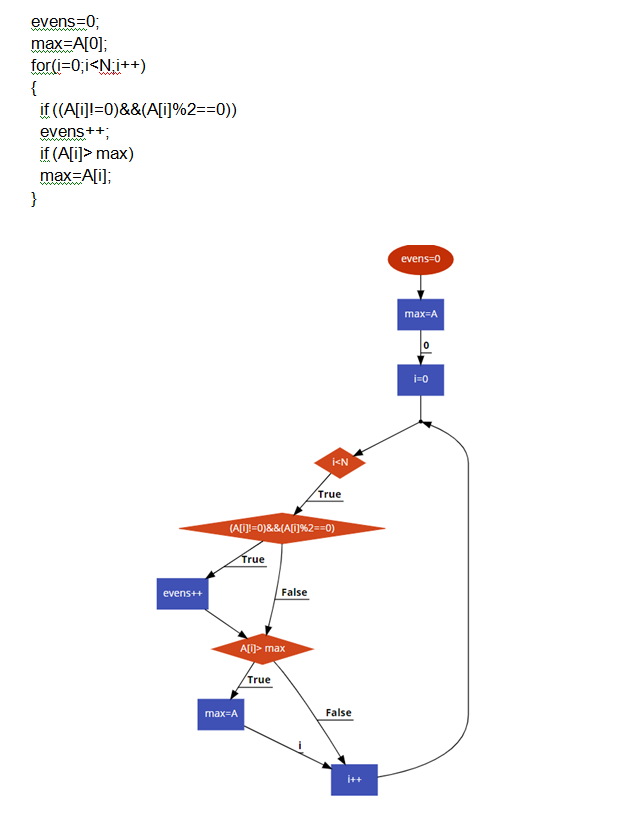
2
3
4
5
3. Βασικός στόχος στη φάση της σχεδίασης λογισμικού είναι:
H τεκμηρίωση των απαιτήσεων του χρήστη
H υλοποίηση του κώδικα
Η αποσύνθεση του συστήματος σε μονάδες και ο καθορισμός των σχέσεων μεταξύ τους
Ο έλεγχος του λογισμικού
4. Πόσα σφάλματα υπάρχουν στο κάτωθι διάγραμμα κλάσεων;
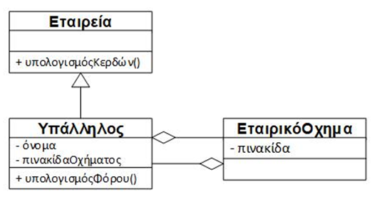
0 (κανένα)
1 (ένα)
2 (δύο)
3 (τρία)
5. Θεωρήστε ένα υποθετικό ηλεκτρονικό βιβλιοπωλείο και την ακόλουθη λειτουργία συγγραφής κριτικής για βιβλίο: Ο Χρήστης επιλέγει τη Συγγραφή Κριτικής στη σελίδα λεπτομερειών ενός βιβλίου. Αφού διαπιστωθεί ότι ο χρήστης είναι συνδεδεμένος εμφανίζεται η σελίδα για τη συγγραφή της κριτικής. Μόλις ολοκληρωθεί η συγγραφή της κριτικής, η κριτική καταχωρείται στο αντίστοιχο βιβλίο και εμφανίζεται μήνυμα καταχώρησης. Σε περίπτωση που ο χρήστης δεν είναι συνδεδεμένος, εμφανίζεται σχετικό μήνυμα. Ποιό από τα παρακάτω διαγράμματα ευρωστίας αναπαριστά καλύτερα τη δοθείσα περιγραφή της λειτουργικότητας και ταυτόχρονα δεν παραβιάζει τους κανόνες των διαγραμμάτων ευρωστίας;
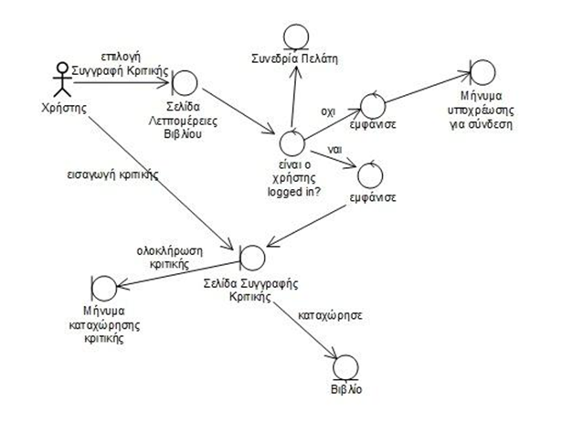 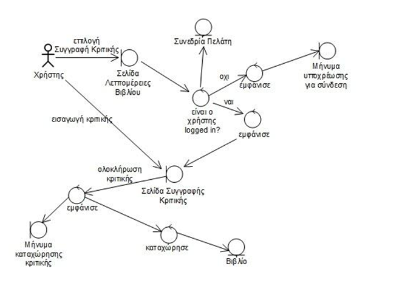
(i)
(ii)
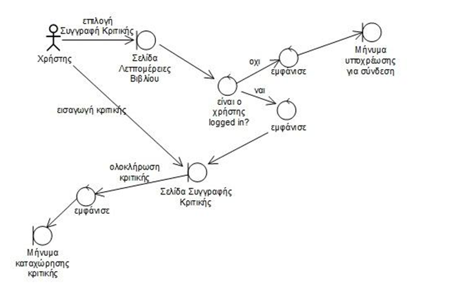 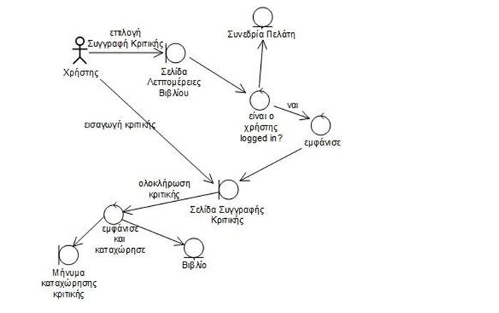
(iii)
(iv)
6. Ένα μάθημα σε Πανεπιστήμιο μπορεί να έχει έως 3 προαπαιτούμενα μαθήματα (preRequisites). Ποιο από τα κάτω διαγράμματα κλάσεων της UML αναπαριστά με τον καλύτερο τρόπο την προηγούμενη διατύπωση;
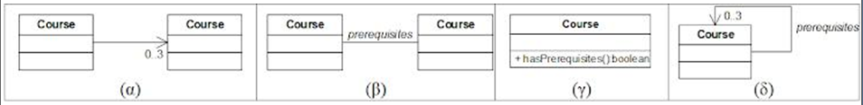
1
2
3
4
7. Θεωρήστε ένα υποθετικό ηλεκτρονικό βιβλιοπωλείο και την ακόλουθη λειτουργία συγγραφής κριτικής για βιβλίο: Ο Χρήστης επιλέγει τη Συγγραφή Κριτικής στη σελίδα λεπτομερειών ενός βιβλίου. Αφού διαπιστωθεί ότι ο χρήστης είναι συνδεδεμένος εμφανίζεται η σελίδα για τη συγγραφή της κριτικής. Μόλις ολοκληρωθεί η συγγραφή της κριτικής, η κριτική καταχωρείται στο αντίστοιχο βιβλίο και εμφανίζεται μήνυμα καταχώρησης. Σε περίπτωση που ο χρήστης δεν είναι συνδεδεμένος, εμφανίζεται σχετικό μήνυμα. Ποιό από τα παρακάτω διαγράμματα ευρωστίας αναπαριστά καλύτερα τη δοθείσα περιγραφή της λειτουργικότητας και ταυτόχρονα δεν παραβιάζει τους κανόνες των διαγραμμάτων ευρωστίας;
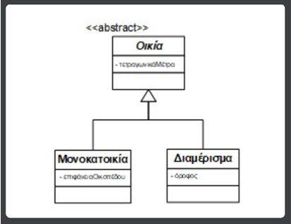 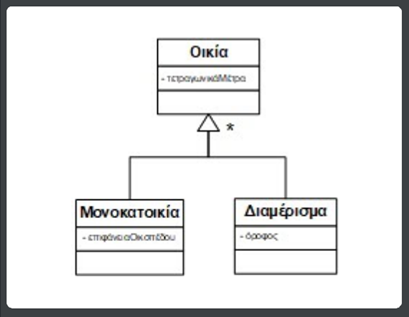
(i)
(ii)
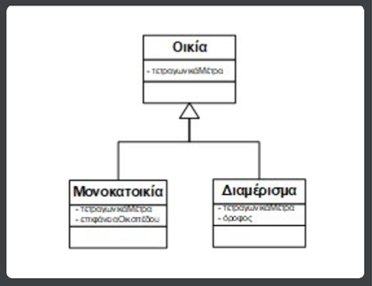 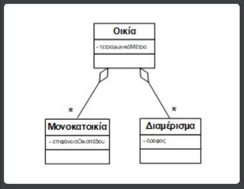
(iii)
(iv)
8. Δίνεται η κάτωθι περιγραφή απαιτήσεων υψηλού επιπέδου για ένα υποθετικό σύστημα ταξιδιωτικού γραφείου. Ποιό από τα παρακάτω διαγράμματα περιπτώσεων χρήσης είναι το σωστό;
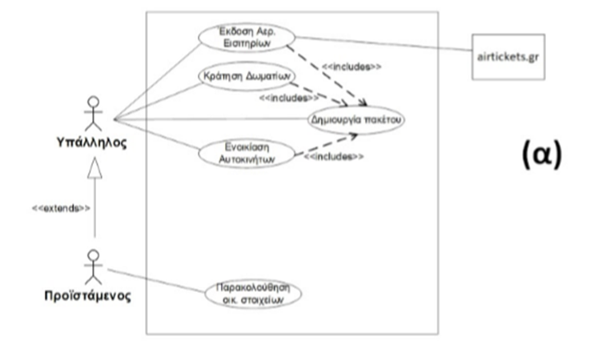 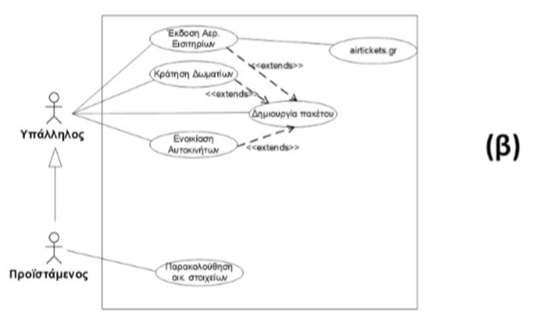
(i)
(ii)
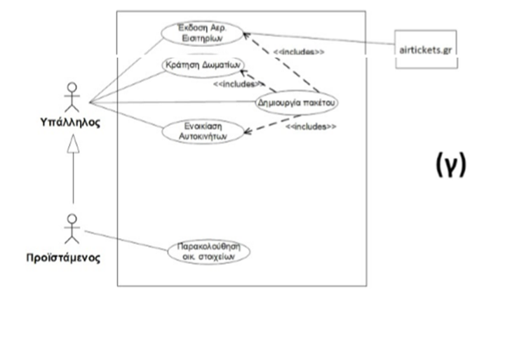 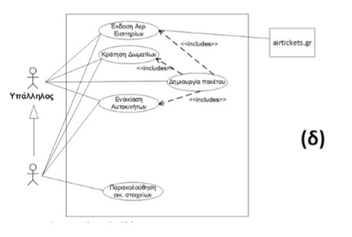
(iii)
(iv)
9. Ποιά από τις παρακάτω προτάσεις, είναι η ορθότερη, ώστε να αποτελέσει το πρώτο βήμα σε μια λεκτική περιγραφή της βασικής ροής μιας (υποθετικής) περίπτωσης χρήσης::
Το σύστημα ξεκινά την επεξεργασία των δεδομένων
Ο χρήστης εισάγει τα προσωπικά του στοιχεία και καλείται η μέθοδος processData() της κλάσης UserInput
Ο χρήστης εισάγει τα προσωπικά του στοιχεία στην Κεντρική Οθόνη της εφαρμογής
Ο χρήστης εισάγει τα προσωπικά του στοιχεία στην Κεντρική Οθόνη της εφαρμογής. Αν ο κωδικός είναι σωστός εμφανίζεται η οθόνη με τις επιλογές του χρήστη. Αν ο κωδικός είναι εσφαλμένος εμφανίζεται μήνυμα σφάλματος
Αποτέλεσμα =